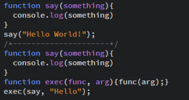
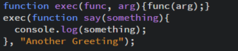
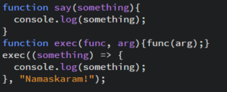
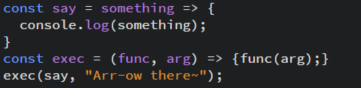

What is the DOM?
The Document Object Model (DOM) is a programming interface for and is an object-based data representation of all HTML loaded into the browser. Acting as an API, the DOM allows programs to read and manipulate the content, structure and style of an HTML document using JavaScript to implement such changes in the browser.
Web browsers use the DOM to make web pages amenable to manipulation via what is called an Interface: an object structured as a data type to enforce specific properties when implemented. There are a plethora of interfaces that developers can use, but the most commonly used objects include the Document, Element, Node and Window interfaces. Whereas the window interface represents the browser, the document interface is the root of the document. The element and node interfaces provide many of the methods and properties that are used on HTML elements, regularly referred to as nodes.
How does the DOM Work?
The document interface serves as an entry point to content embedded in a web page, granting developers access to specific nodes on the DOM Tree. HTML elements -their attributes, classes and ids, are utilized as Selectors and this is the first step to make when preparing to work in the DOM. Selectors are stored in a variable where they are appended to the document object, but they are then passed to an EventTarget Interface method to perform a specified function whenever an event occurs in the browser.
The basic gist of working in the DOM involves programming selected elements to listen for events and invoke manipulation of such elements in the form of a function when an event actually occurs. An example of this is when a user places a mouse over an image or text, which produces a tooltip with greater details about that content.
That said, this tutorial aims to outline the process of working in the DOM using a step-by-step instructional guide that can be broken down into three phases. By the end of this tut, we should have a functional DOM <script>.
[1] Selecting <html> Elements
[a] Select an <html> element
[b] Choose a Selection Method
Append element to the document object
Store element in a Variable
[a] Select an Element
Selection is a way to identify an element so that the browser can find and make it available for us to do something with using JavaScript. It is at this juncture that you are determining which node of the DOM will be targeted for manipulation. Elements can be selected by id, class name or tag: individually or as a collection.
- <div>...</div>
- <p>...</p>
- <h1 id="idName">...</h1>
- <form class="className">...</form>
- <ul>.. <li>...</li> ..</ul>
The table above exemplifies how elements could be targeted for selection.
[b] Choose a Selection Method
After targeting an element for selection, you must create a variable to store it then choose one of five selection methods from the element interface before appending it to the document interface. When storing an element in a variable, the variable name should reflect the element and its function.
Syntax const varName = document.method('element');
The document interface is employed here as a constructor to create a new document object as a GlobalEventHandler, which simultaneously acts as a reference for a callback function that will be called later on.
Selection Methods
getElementById( 'id' ); is used to select an element by its #id: this is the most commonly used method for manipulating or getting data from an individual element on your document.
getElementsByClassName( 'className' ); is used to return a collection of all elements in the document with the specified .className as a NodeList object.
A collection is like an array: gain access via its indices or loop over it in its entirety to access all items. The objective of targeting a collection is completed with the use of a for() loop due to the need to iterate over all items. The NodeList object represents a collection of nodes that can be accessed by index numbers, starting at 0. You can use the length property of the NodeList object to determine the number of elements, then you can loop through all elements and extract the info you want.
getElementsByTagName( 'h1' ); works exactly as the previously described method: simply replace the .className with a <tag>. Both methods will return live DOM elements whereas any changes are reflected in the NodeList object. Sometimes it is best not to return live DOM elements and this can be done using a query method.
querySelector( '#id' ); is used to return the first element that matches a specified selector, as a static NodeList object.
querySelectorAll( '.class' ); is used exactly as the previously described method with the exception that it will return all elements of the same type.
Query methods might appear to have magical powers as much can be done for precise specification of targeting elements.
document.querySelectorAll( ' #id ' );
document.querySelectorAll( ' .class ' );
document.querySelectorAll( ' h1 ' );
document.querySelectorAll( ' [attribute=value] ' );
document.querySelectorAll( ' li:[nth-child(odd)] ' );
document.querySelector( ' ul.odds > li:nth-child(odd) ' );
[2] Pass Selector to an Event Listener
[c] Pass the element to an .addEventListener() method
Anytime a user interacts with a webpage, you generate different kinds of events. An Event is something that occurs on a webpage such as a user action (ie clicking on a link) to automated notifications. JavaScript was created to listen for events and respond to them: actually, the browser listens for events while JavaScript is used to respond accordingly. DOM Events are sent to notify code of interesting things that have taken place. Each event is represented by an object which is based on the Event interface, and may have additional custom fields and/or functions used to get additional information about what happened.
The EventTarget method addEventListener() sets up a function that will be called whenever the specified event is delivered to the target. Common event targets are Element, Document, and Window, but the target may be any object that supports events (such as XMLHttpRequest). This method works by adding a function or an object that implements EventListener to the list of event listeners for the specified event type on the EventTarget on which it's called.
The event listener can be specified as either a Callback Function or an Object that implements EventListener and is served as a callback. In this case, the callback accepts a single parameter: an object based on Event describing the event which has occurred, and it returns nothing. The most common event types include mouse and keyboard events, but there are more than 100 event types defined in official specifications that can be utilized to create an event.
| Event Type |
Fired when~ |
| Mouse |
click / dblclick / mousedown |
| Keyboard |
keydown / keyup / keypress |
| Resource |
load / unload / abort / error |
| Form |
reset / submit |
| CSS Animation |
animationstart / animationiteration |
With the selected element stored in a variable, the .addEventListener() method can be appended to the target (ie selector) to instantiate a function-block that will be called whenever the event is triggered.
Syntax selector.addEventListener('type', () => {listener} );
This method registers an event handler to a specific event type on the element and takes two parameters: the first parameter defines the type of event to listen for while the second parameter represents the listener (ie Event Handler) that receives a notification when an event of the specified type occurs. When an Event Handler is called, it receives an Object as its first parameter: the object contains useful information as properties to handle the event inside of the handler.
Adding an Event Listener to an element is useful for handling events that take place on its ancestors: this is called Event Bubbling. The .target property, which is often used with a handler to reference an object that dispatched the event, can be used in order to implement event delegation.
[3] Add Function to Listener
[d] Write the function to be performed when an event is triggered
The event handler does just that: handle events. Any code comprised within the handler is the function that will be triggered when called upon. Functions are used as parameters because you can apply DOM methods to set a function that triggers an action in response to an event affording a greater level of control over when and how that function gets executed.
Brief Review of Functions
Function Declaration

The standard for writing functions begins with a Declaration (ie Statement). All declarations begin with the keyword function followed by its name. The parenthesis holds arguments while the curly brackets defines the function. In the first example, a function called say is declared, accepting a single parameter, which is called with the console.log.
In the second example, a function called exec uses the previous function as a parameter. The func keyword represents the function say(){} while the arg keyword represents the actual argument. When called, the function passes the say function and a string as arguments.
Function Expression

A function Expression allows usage of a function as a parameter for another function. In this example, the function say(){} is passed directly into the function exec(){} as a parameter, transforming the Declaration into an Expression!
Anonymous Function

The main difference between the declaration and expression above is the function name. When a function is passed as a parameter, its name can be omitted during definition: the result is an Anoymous Function, which is a best practice for working in the DOM. That was until ES^ (see below).
Arrow Function

An Arrow Function is a syntactically compact alternative to a regular function expression. When using arrow functions keep in mind that such expressions are ill suited as methods nor can be used as a constructor among other limitations.
To conclude, the sum of each declaration or expression will produce the exact same result.
Setting up a function requires use of properties that are triggered inside of the handler.
Syntax selector.addEventListener('type', () => {
listener
} );
All properties work within the confines of a DOM Interface; interfaces practiced here include (in order of hierarchy):
Examples of DOM Events
DOM events allow JavaScript to register different event handlers on elements in an HTML document. A document containing HTML is described using the Document interface, which is extended by the HTML: for example, the Element interface is enhanced to become HTMLElement.
Document Interface
The Document Interface represents any web page loaded in the browser and serves as an entry point into the web page's content, which is the DOM tree: elements such as <body> and <table>that provides functionality globally to the document. Properties and methods of this interface practiced here include body and createElement().
The Document.createElement() method creates the HTML element specified by tagName, which is a string that specifies the type of element to be created. The node of the created element is initialized with the value of tagName, returning the new element.
Syntax
var element = document.createElement(tagName);
Node Interface
The Node is an interface that the Document and Element Interfaces inherits Node object types, properties and methods from: it inherits properties and methods from its parent, EventTarget, for itself. Properties and methods of this interface practiced here include textContent, appendChild, and removeChild.
The Node.textContent property represents the text content of a node and its descendants. This property is often confused with the aforementioned HTMLElement.innerText property as well as the Element.innerHTML property. Where .innerText is aware of its rendered appearance, .textContent returns content for all elements, thus, it could produce visually disturbing results. In contrast with the .innerHTML property, which sets HTML markup of an element, .textContent has better performance for setting markup because its value is not parsed as HTML, essentially preventing XSS attacks.
Syntax .addEventListener('click', () => {
target.textContent = 'text string'; } );
The Node.appendChild() method adds a node to the end of the list of children of a specified parent node. If the given child is a reference to an existing node in the document, appendChild() moves it from its current position to the new position. Its syntax accepts a single argument: the node to append to the given parent node, and this is most often an HTML tag. Use of this method will require the Document.createElement() method to enable the addition of a new node. The syntax below illustrates how to amalgamate these methods, resulting in the creation of a new <p> element that is appended to the end of the document <body>. ES6 introduced the ParentNode.append() method to replace this method as it supports multiple arguments and appending strings.
Syntax
var p = document.createElement("p");;
document.body.appendChild(p);
The Node.removeChild() method removes a child node from the DOM and returns the removed node, which still exists in memory, but is no longer part of the DOM. The removed node can be referenced for later usage using the first syntax, but an error will be thrown for the second.
Syntax
var oldChild = node.removeChild(child);
or
node.removeChild(child);
| Node Properties |
Usage |
| target.textContent = 'text string'; |
Set HTML Markup |
| target.textContent = target.textContent.toUpperCase(); |
Set Markup to Upper case |
| target.textContent = target.textContent.toLowerCase(); |
Set Markup to Lower case |
| target.textContent = inputSelector.value; |
User Assigned Value |
HTMLElement Interface
The HTMLElement Interface represents any HTML element. Some elements directly implement this interface, while others implement it via an interface that inherits it. Properties of this interface practiced here include style, title and innerText.
The HTMLElement.style property is used to set the inline style of an element. There are a plethora of CSS styling properties that can be accessed from JavaScript. The syntax for this property appends a specific CSS property to itself then assigns a value. Setting the value to null or an empty string will reset a style declaration.
Syntax .addEventListener('click', () => {
target.style.property = 'value';
} );
The HTMLElement.title property represents the title of an element displayed as a tooltip when a user places a mouse over a node. HTML attributes exist as properties on element objects and can be modified in this same fashion.
Syntax .addEventListener('click', () => {
target.title = 'value';
} );
The HTMLElement.innerText property of the HTMLElement interface represents the "rendered" text content of a node and its descendants
Syntax .addEventListener('click', () => {
target.innerText = 'text string';
} );
| HTMLElement Properties |
Usage |
| target.style.backgroundColor = 'red'; |
Set Background Color |
| target.style.color = 'red'; |
Set Text Color |
| target.style.display = 'none'; |
Toggle Display |
| target.style.fontSize = '1.2em'; |
Set Font-Size |
| target.style.property = inputSelector.value; |
User Assigned Value |
| target.title = 'Definition/Summary'; |
Create a Tooltip |
| target.innerText = 'text string'; |
Displays Rendered HTML Node Content |
Element Interface
Element is the most general base class from which all objects in a Document inherit. It only has methods and properties common to all kinds of elements. Most functionality is specified further down the class hierarchy.
The Element.innerHTML property can be used to set HTML markup for an element.
Syntax .addEventListener('click', () => {
target.innerHTML = 'HTMLstring';
} );
Setting the value of innerHTML removes all of the element's descendants and replaces them with nodes constructed by parsing the HTML given in the string htmlString: this lets you easily replace the existing contents of an element with new content.
Window Interface
The Window Interface represents a window containing a DOM Document and all of its Objects.